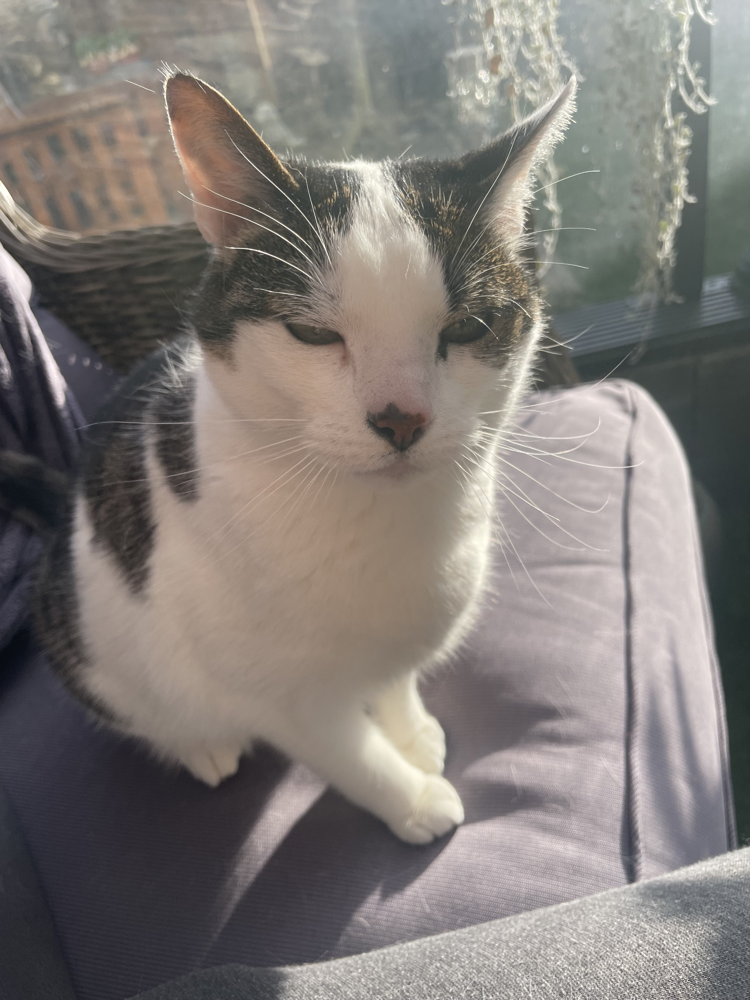

About Me
I am Tyler Vermeulen. I’m an Unreal Engine Developer who enjoys doing some artsy things on the side. I started out learning Unity because school required it, even though I always yearned to work in Unreal. Once I got the opportunity, I immediately took the chance. In Unreal, I'm especially interested in working in VR and creating engaging experiences for both VR and PC. In terms of my personality, I’d describe myself as someone who jokes around a lot, but knows when to be serious when the situation calls for it. My hobbies include, but are not limited to: